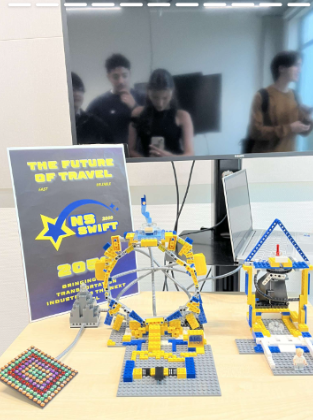

NS
SWIFT

2024
In the second week of school, we were given an exciting challenge: to create a studio with our group.
This wasn’t just a regular project—it was meant to prepare us for a future client assignment. We had to design something that showcased us as a group and our creativity, while also being attractive enough for other companies to want to partner with.
It was a great way to practice teamwork and get a glimpse of how professional projects work.
>>> Choosing a topic
First we started brainstorming which topic we would do and making sure no other groups had similar. We ended up choosing a form of transportation which would be Teleportation! We discussed the pros and cons of teleportation to see the potential risks and rewards of using teleportation as a means of travel.
>>> Desiging
Before we started designing our own portal we had to do our research of what depiction of a teleporter would like. I brought up the New York to Dublin portal which is the closest thing to the real portal we have. Maxim started doing sketches and we thought of using legos to build a portal since I thought it would be different from everybody’s.

asdada
>>> Stop Motion Video
We also made a stop motion video with a lego character showcasing how the NS-swift would work.

What went well:
It was the first project of the semester, getting to know everyone was fun while working on the project. Everyone was really creative and only wanted to make the project better.
Could've went better:
There were instances where we would spend too much time brainstorming or not making a choice and also times where someone wouldn’t have anything to do. What could be improved in future projects id say is more communication and time management We spent a lot of time deliberating which cost us we could've done more if we didn't spend too much time brainstorming.